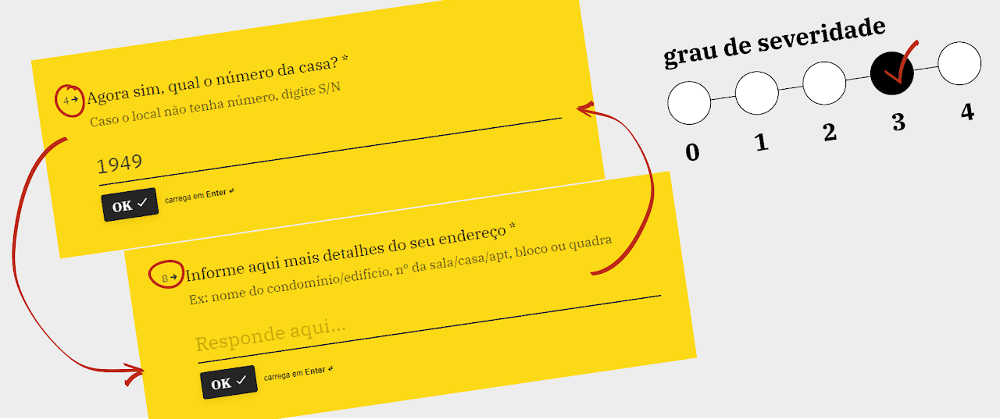
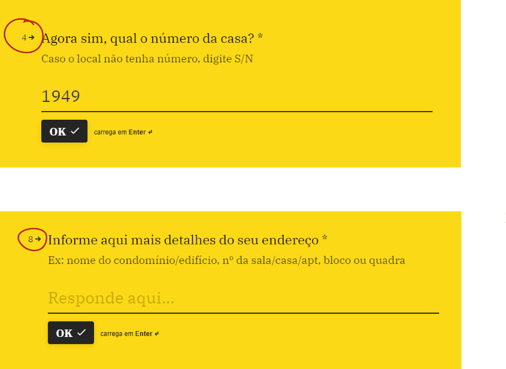
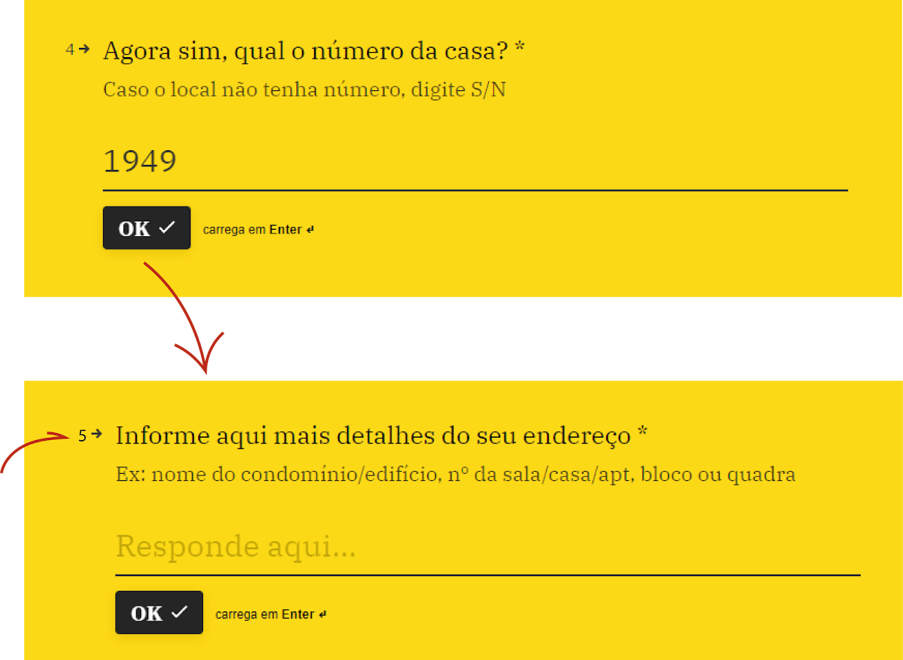
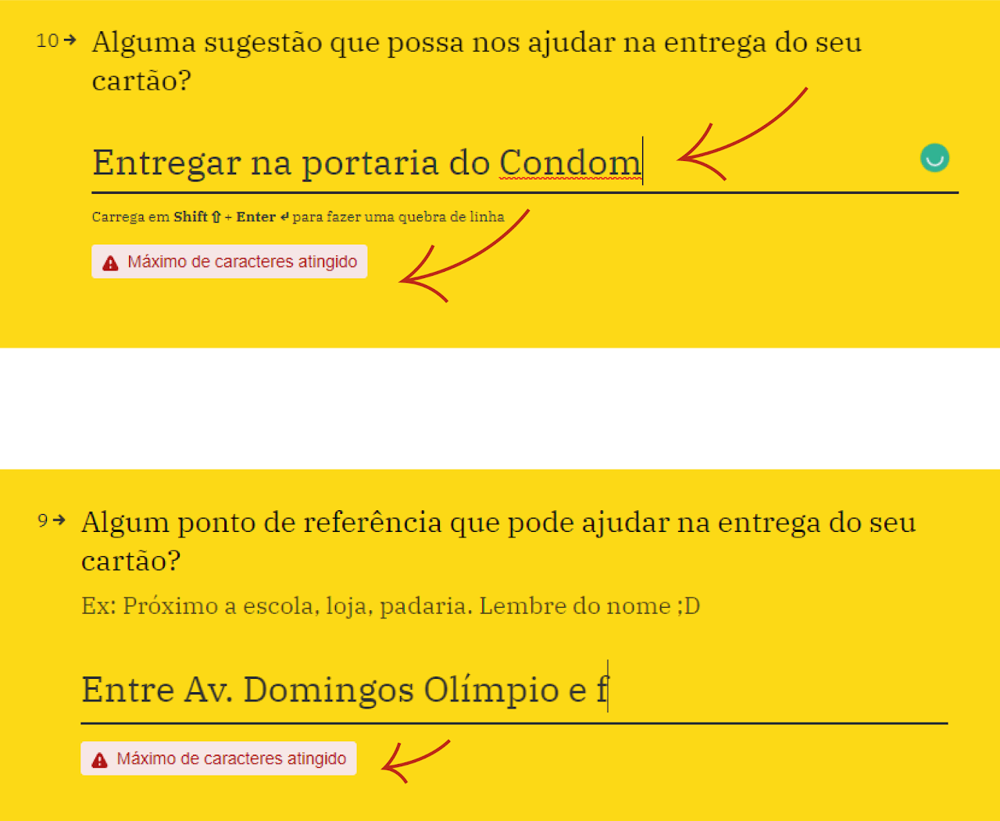
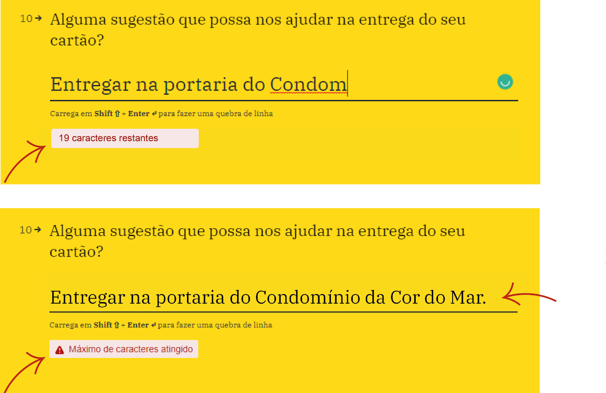
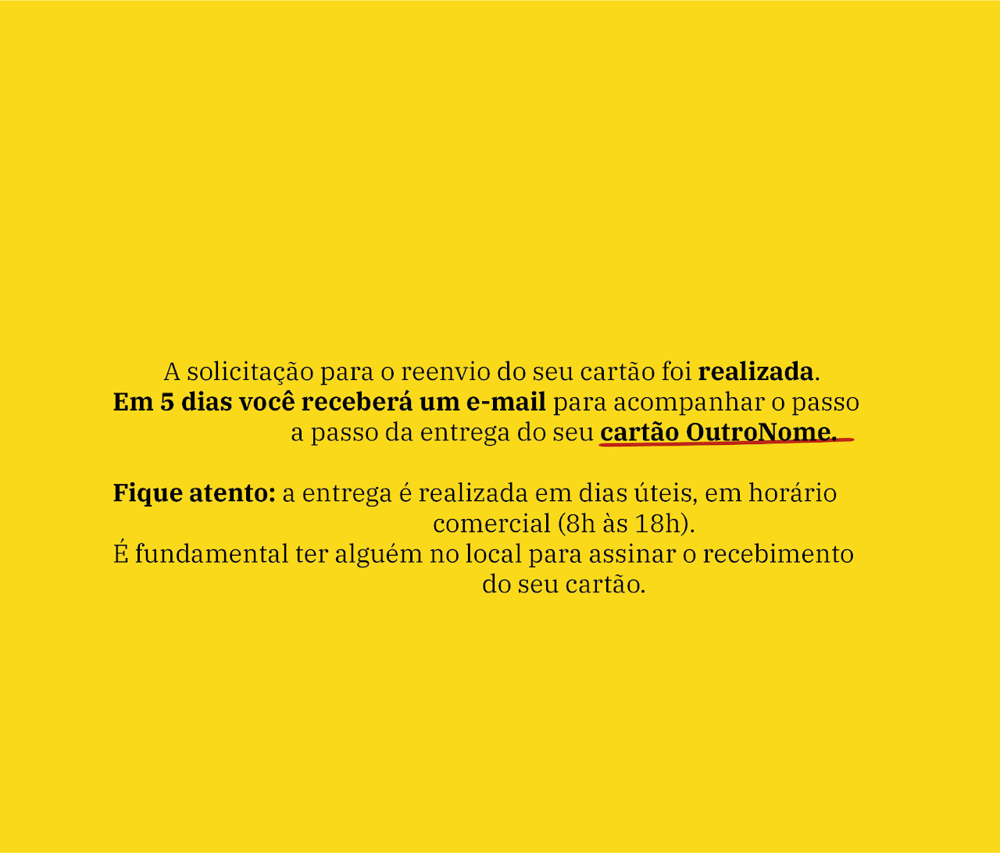
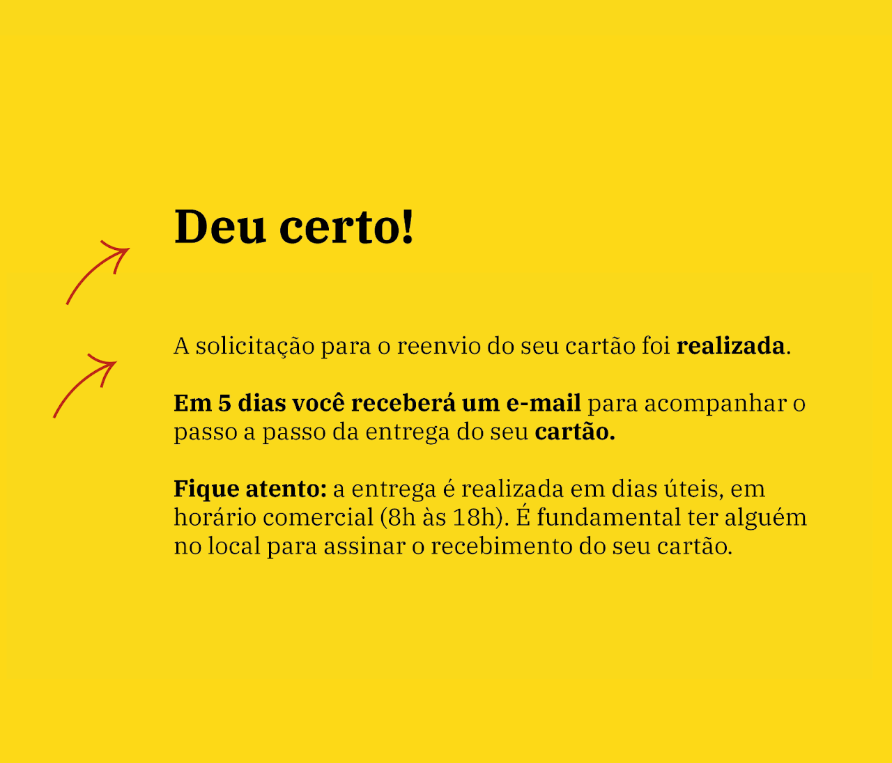

Estudo de caso: análise de usabilidade em formulários
Este é um estudo de caso feito voluntariamente por mim, sem nenhum envolvimento de qualquer empresa que possa ser identificada com o produto aqui descrito.
Contexto
Em 2021 solicitei um cartão em um banco digital brasileiro. Enfrentei demora no cadastro da proposta e o cartão não chegou no prazo estipulado.
Recebi um e-mail avisando que não conseguiram entregar por problemas no meu endereço. Fui redirecionada a um TypeForm simpático e por lá enviei as informações.
Ao proceder na sequência indicada pelo fluxo, me deparei com algumas questões de usabilidade que atrapalharam um pouco. A seguir, uma breve descrição dos problemas com indicação do grau de severidade e sugestão de melhoria. Espero ajudar a tornar ainda mais agradável a experiência para os usuários interessados.
O processo
Usei uma metodologia que consistia em analisar o conteúdo do formulário de atualização de dados em busca de violações das heurísticas de usabilidade (Nielsen, 1985). Ao encontrar um problema, fazia um print da tela para detalhar o problema, pontuar o grau de severidade e apontar uma possível solução.
Foram identificados três problemas que violaram duas heurísticas de usabilidade:
PROBLEMA 1 Endereço e complemento
PROBLEMA 2 Limitação de caracteres
PROBLEMA 3 Mensagem de confirmação
Problema 1: Endereço e complemento

Problema: Quando digitamos endereços, espera-se que logo após o número da casa apareça o campo para o complemento. Neste formulário, isto não acontecia.
O campo do número da casa é o quarto da lista. Depois dele vem o bairro, cidade, estado e somente no campo 8, ele pede pra informar mais detalhes.
Isto quebra uma convenção e pode deixar a pessoa um pouco confusa.

Grau de severidade: 3
Solução proposta: Posicionar o campo que pede mais detalhes do endereço (5) logo após o campo de número da casa (4).
Problema 2: Limitação de caracteres

Problema: Nos campos que pedem alguma digitação, há uma limitação de caracteres, que só é informada ao usuário depois que ele atinge a quantidade máxima.
Não há uma informação prévia para que ele pense no que vai digitar.
A quantidade máxima de caracteres do campo (30) é muito limitada.

Grau de severidade: 4
Não informar previamente qual o limite máximo de caracteres que o usuário pode digitar é uma violação da Heurística de Nielsen número 5: Prevenção de Erros.
Solução proposta: O melhor mesmo é não limitar a quantidade de caracteres. Mas, se for realmente necessário, aqui vão duas sugestões:
- adicionar um contador de digitação para ajudar o usuário a entender que há uma limitação.
- aumentar a quantidade máxima de caracteres para o dobro ou triplo.
Problema 3: Mensagem de confirmação

Problema: A página de confirmação não apresentou um título para indicar o que estava acontecendo.
A mensagem simpática estava desorganizada, e ainda informava que eu havia solicitado um cartão com outro nome.
Isto gerou uma insegurança. Para quem eu mandei meus dados atualizados, mesmo?
Conversando com algumas pessoas, descobri depois que se tratava do antigo nome de um produto similar da empresa e que a confusão pode ter ocorrido porque ainda estavam fazendo uma transição interna.

Graus de severidade: 1 e 4
O nome da empresa e a marca devem ser consistentes em todas as peças de comunicação para transmitir confiança ao usuário. Trata-se da Heurística de Nielsen número 1: Consistência e padrões.
Solução proposta:
- Acrescentar um título;
- Corrigir o nome do cartão;
- Revisar o que deve ficar negrito, para enfatizar o que o usuário realmente precisa saber e não apenas palavras aleatórias;
- Revisar o alinhamento do texto (à esquerda dá menos problemas) e a quebra de linhas. Os parágrafos também podem guiar a leitura.
Conclusão
Ainda que esta seja uma análise voluntária, conduzida por uma usuária ansiosa por receber seu cartão, vale ressaltar a pertinência da iniciativa.
Pequenos problemas de usabilidade, quando corrigidos, podem ter um grande impacto na experiência de uso das pessoas que desejam ter um cartão de crédito.
Recomenda-se considerar o grau de severidade indicado em cada situação na hora de priorizar o backlog.